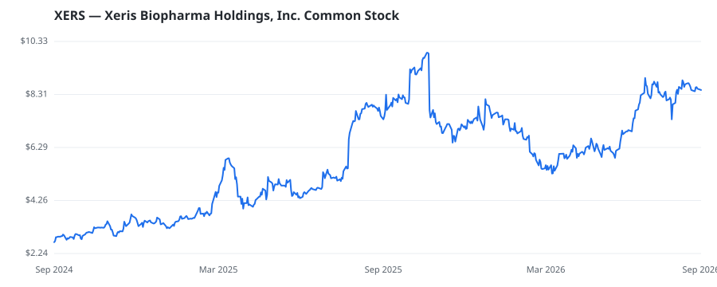

bullish · bearish · n/a — dots: price>SMA10 · SMA10>SMA50 · SMA50>SMA200 · up>down volume (20d)
Pharmaceuticals & Biotech · small cap

Xeris Biopharma Holdings Inc is a commercial-stage biopharmaceutical company focused on developing and commercializing therapies for people with chronic endocrine and neurological diseases in the United States. It offers Recorlev for the treatment of endogenous hypercortisolemia in patients with Cushing's syndrome; Gvoke for the treatment of severe hypoglycemia; and Keveyis for the treatment of Primary Periodic Paralysis (PPP). Additionally, the company is advancing its Phase 3-ready pipeline product, XP-8121, a once-weekly subcutaneous injection of levothyroxine, which leverages its proprieta PHARMACEUTICAL PREPARATIONS · website
| Revenue | $291.8M | Net income | $554K |
|---|---|---|---|
| Operating income | $24.9M | Diluted EPS | $0.00 |
| Assets | $383.5M | Equity | $13.7M |
This name produced 0.2% of the ranked funds’ total alpha.
| Fund | Fund alpha vs SPY | Position | % of book |
|---|---|---|---|
| Knott David M Jr | +17% | $8M | 4.4% |
Hedge data: SEC EDGAR 13F · ranked funds beat SPY in >50% of their quarters · fund alpha = mirror-portfolio return minus SPY.